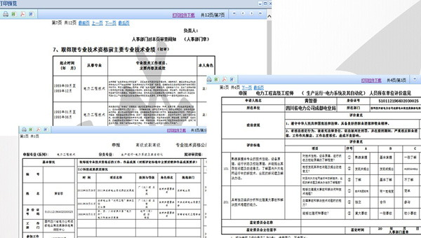
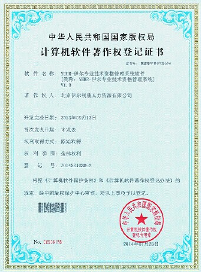

系统功能：
无纸化申报
申报人通过网站在线报名、在线信息填写、在线资料上传、在线缴纳评审费、在线数据检查、提交单位审核等功能。实现真正意义上的无纸化申报。
系统自动审查审报材料
系统根据参评要求，对申报者在线填写的资料进行自动核查，替代人工审核工作，对于没有达到申报资格的材料，系统将会自动给予提示。
电子档案
对学历证书、资格证书、外语合格证书、计算机合格证书、获奖证书、个人专业技术工作报告、相关论文著作、专业技术人员继续教育证明等评审条件中规定的申报材料，通过档子档案的制作，申报者可直接上传到网站服务器，上传成功后，用户可做在线编辑、修改、删除、替换等操作。
单位在线审查资料（无纸化评审）
申报者在线填写完申报资料后，通过系统可直接提交到所在单位审核，申报者所在单位审核员通过相应的账号登录系统后，可在线对申报者提交的材料进行在线审核，同时也会对每个申报者上传相应的《单位鉴定意见扫描件》，所有的操作全部都在线完成。
单位审核员还可以通过系统对上报的参评人员信息进行汇总、查询、统计、分析，以便了解各级别、专业、系列的上报人数、年龄结构、地区分布等各种情况，为评审工作的顺利开展及相关决策的制定，提供有力的数据支持。
构建评委专家库
使用系统录入、汇总被推荐的评委专家信息，审核通过后，自动进入评委专家库，为评委选拔时，提供详细且完整的评委信息资源；依据年龄、专业、级别、所在地区等字段进行查询、统计、分析，确定出本年度参加评审的评委人选，并对评委进行有效的分配及管理。
建立评审组
根据专业系列的参评人员上报数量及特定的评审规则，建立评审组，根据专业、系列、人数及回避要求等具体情况，自动为各评审组分配参评人员、评委，生成评审数据，为评委的在线评审工作提供了基本的数据资源。
在企业审核网络管理平台中，系统还将提供按照级别、专业、系列等字段，对参评人员申报人数、通过评审人数等情况进行统计的功能，并自动计算评审通过率，可为人才管理的相关决策及业务分析提供有力的数据支持。
生成证书编号
系统可根据证书编码规则，为通过评审的各参评人员生成唯一的证书编号。
生成照片文件
系统提供将参评人员照片从数据库中转出的功能，可以存储为JPG等多种文件格式。照片文件导出时，系统将文件自动命名为如证书编号、姓名、身份证号码等文件名，方便工作人员在后续工作中对应查找此人。
打印证书
支持证书套打功能，依据各项信息的指定位置、设计尺寸，逐项打印出通过评审的参评人员姓名、身份证号码、专业技术资格名称、证书编号等需要在证书上显示的各项信息。
评审结果公示
系统在评审结束后，可将评审入围的参评人员信息直接导出，生成Excel、Word格式文档，并支持打印功能，向社会进行公示，接受监督。同时，系统还可根据具体情况，留有与网站的程序接口，支持人才管理部门进行网上信息公示。如果入围的参评人员公示不通过，可在系统内进行相应调整。
系统特点：
1、技术先进、数据更安全
新系统采用目前最新的JAVA企业级系统架构、MVC分层模式，能够高效处理大数据量并发及多业务处理。前台页面使用流行的脚本框架语言ExtJs，使界面处理更贴近于业务要求的操作模式。
采用B/S结构的新系统，由于其数据集中存放于总部或人才中心机房的数据库服务器，客户端不保存任何业务数据和数据库连接信息，也无需进行什么数据同步，所以这些安全问题也就自然不存在了。
过去职称申报软件属于单机使用的软件，采用的技术已经不能够满足最新的业务要求。由于原系统C/S结构软件的数据分布特性，软件必须在各地安装多个客户端、服务器，由最终使用者保证数据的安全，并在多个服务器之间进行数据同步，如此一来，每个数据点上的数据安全都影响了整个应用的数据安全。一个点的人为、非人为因素导致的数据损坏、丢失，都会影响整个业务线的正常运行。
2、更快的服务响应及时性
职称各业务主线虽然不常变换，但因业务每年会不断调整，在支线和细节上会经常调整。因此也需要经常对已经部署的软件进行维护、升级。
由于过去单位软件C/S结构的应用是分布的，需要对每一个使用节点进行程序安装、升级，所以即使非常小的程序补丁都需要很长的重新部署时间，由于部署的点多，各程序版本的一致性很差，会因版本不一致带来很多数据上的误差，因此也会导致整个评审流程的延期。
B/S结构将业务处理都集中于总部服务器上，每个使用节点只是用浏览器登录处理数据，并没有任何本地业务程序，只要总部服务器更新就可以保证每个使用节点的业务功能全是最新的，可以做到快速响应变化。
3、保证数据唯一性
对于B/S结构，数据是集中存放的，每一次业务操作都直接进入到核心数据库，不存在数据不一致性、不同步的问题。
原有系统是由各级数据同步均由人工汇总处理，这样很容易由于局部网络故障或个人工作失误，造成数据同步不上来或不准确，因而数据一致性很差。申报者用数据盘上报数据进行采集，中间还需要各单位审查、修改，不能保证数据的一致性、唯一性。
4、数据的扩展性
专业技术资格管理系统是职称管理系统的一个子系统，参评人员填报的个人数据可以长期保存在服务器中，以后涉及到人才中心的业务都可以进行重用。
过去单机版职称申报软件是仅用于职称申报业务系统的，不能为其他系统所共享。
5、数据的实时性
专业技术资格管理系统中申报人员提交数据后，审查单位马上就可以查看到，并进行处理，节省审查单位人员的处理时间。
过去单位版软件需要上报给审查单位，审查单位处理后，再统一上报给上级单位、业务处理比较耗时。
6、系统内部信息交流
系统提供审查单位退回数据以及对申报人员的消息提交、查看功能，方面申报人员了解填报数据如何处理。
7、交费模式改变
系统内部嵌入了支付宝交易平台的支付处理，使申报人员能够方便快捷的进行交费。
8、打印模式流畅
所有个人申报所涉及的内容都通过浏览器在线快速成打印成所需的各专业报表,报表包括: 专业技术资格初审表、申报资格公示表、外语计算机免试申请表（仅免试人员打印）、单位评价意见表等。

咨询电话：010-63414480
（本软件已取得国家版权局颁发的计算机软件著作权）
